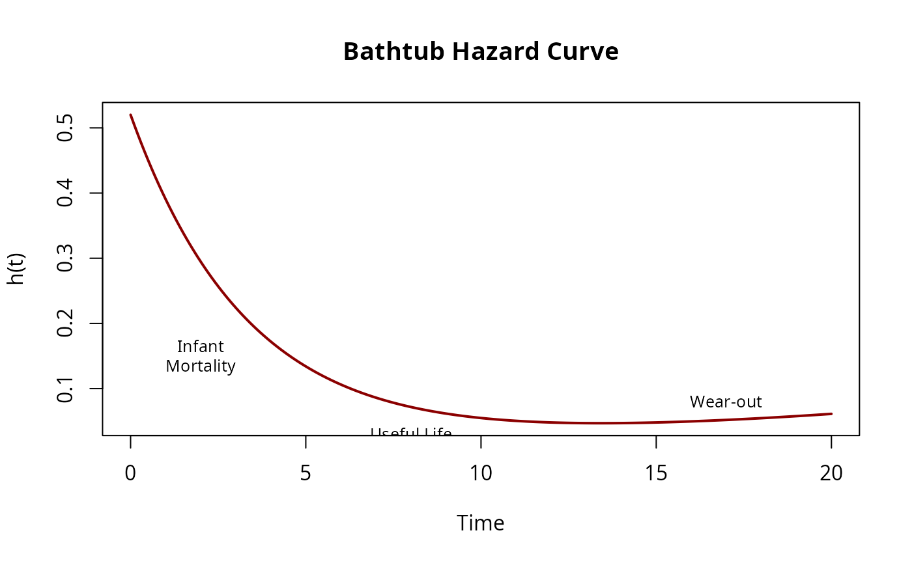

The Power of Custom Hazards
The flexhaz package lets you define any survival
distribution through its hazard function (failure
rate). This guide teaches you how to create your own distributions, from
simple to optimized.
The Three Functions
Every dfr_dist can provide up to three functions:
| Function | Purpose | Required? |
|---|---|---|
rate |
Hazard h(t, par) | Yes |
cum_haz_rate |
Cumulative hazard H(t, par) | Optional (computed numerically if not provided) |
score_fn |
Score function ∂ℓ/∂θ | Optional (exact gradient for faster MLE) |
Let’s see how to provide each.
Level 1: Just the Hazard
The simplest approach - provide only the hazard function:
# Custom hazard: linear increasing failure rate
# h(t) = a + b*t
linear_hazard <- dfr_dist(
rate = function(t, par, ...) {
a <- par[[1]]
b <- par[[2]]
a + b * t
},
par = c(a = 0.1, b = 0.01)
)
# Everything else is computed automatically
h <- hazard(linear_hazard)
h(10) # 0.1 + 0.01*10 = 0.2
#> [1] 0.2
S <- surv(linear_hazard)
S(10) # exp(-integral of hazard)
#> [1] 0.2231302Pros: Minimal effort, works out of the box.
Cons: Cumulative hazard computed via numerical integration (slower, less accurate).
Level 2: Add Analytical Cumulative Hazard
When you know the closed-form integral, provide it:
# H(t) = integral of (a + b*u) from 0 to t = a*t + b*t^2/2
linear_hazard_v2 <- dfr_dist(
rate = function(t, par, ...) {
a <- par[[1]]
b <- par[[2]]
a + b * t
},
cum_haz_rate = function(t, par, ...) {
a <- par[[1]]
b <- par[[2]]
a * t + b * t^2 / 2
},
par = c(a = 0.1, b = 0.01)
)
# Now cumulative hazard uses the analytical formula
H <- cum_haz(linear_hazard_v2)
H(10) # 0.1*10 + 0.01*10^2/2 = 1.5
#> [1] 1.5
# Verify survival
S <- surv(linear_hazard_v2)
S(10) # exp(-1.5) ≈ 0.223
#> [1] 0.2231302
exp(-1.5)
#> [1] 0.2231302Pros: Faster, exact cumulative hazard; improves all downstream computations.
Cons: More work to derive the integral.
Level 3: Add Analytical Score Function
For fastest MLE with exact Hessian, also provide the score (gradient of log-likelihood):
# Score derivation:
# Log-likelihood for exact observation: log(h(t)) - H(t)
# Log-likelihood for censored: -H(t)
#
# For exact: log(a + b*t) - a*t - b*t^2/2
# d/da: 1/(a+b*t) - t
# d/db: t/(a+b*t) - t^2/2
linear_hazard_v3 <- dfr_dist(
rate = function(t, par, ...) {
a <- par[[1]]
b <- par[[2]]
a + b * t
},
cum_haz_rate = function(t, par, ...) {
a <- par[[1]]
b <- par[[2]]
a * t + b * t^2 / 2
},
score_fn = function(df, par, ...) {
a <- par[[1]]
b <- par[[2]]
t <- df$t
delta <- if ("delta" %in% names(df)) df$delta else rep(1, nrow(df))
h_vals <- a + b * t # hazard at each observation
# d/da: sum over exact of 1/h(t) minus sum of all t
da <- sum(delta / h_vals) - sum(t)
# d/db: sum over exact of t/h(t) minus sum of all t^2/2
db <- sum(delta * t / h_vals) - sum(t^2) / 2
c(da, db)
},
par = c(a = 0.1, b = 0.01)
)
# Test: score at MLE should be near zero
set.seed(42)
test_data <- data.frame(t = sampler(linear_hazard_v3)(50), delta = 1)
solver <- fit(linear_hazard_v3)
result <- solver(test_data, par = c(0.05, 0.005))
s <- score(linear_hazard_v3)
s(test_data, par = coef(result)) # Should be ≈ (0, 0)
#> [1] -0.01503346 0.38575589Pros: Exact gradient and Hessian; fastest optimization.
Cons: Requires deriving score function analytically.
Complete Example: Makeham Distribution
Let’s build the Makeham distribution from scratch. This models mortality with both accident (constant) and aging (exponential growth) components:
Step 1: Derive the Mathematics
Cumulative hazard:
Score function (for exact observations, delta=1):
Derivatives: - - -
Step 2: Implement
dfr_makeham <- function(lambda = NULL, alpha = NULL, beta = NULL) {
par <- if (!is.null(lambda) && !is.null(alpha) && !is.null(beta)) {
c(lambda, alpha, beta)
} else NULL
dfr_dist(
rate = function(t, par, ...) {
lambda <- par[[1]]
alpha <- par[[2]]
beta <- par[[3]]
lambda + alpha * exp(beta * t)
},
cum_haz_rate = function(t, par, ...) {
lambda <- par[[1]]
alpha <- par[[2]]
beta <- par[[3]]
lambda * t + (alpha / beta) * (exp(beta * t) - 1)
},
score_fn = function(df, par, ...) {
lambda <- par[[1]]
alpha <- par[[2]]
beta <- par[[3]]
t <- df$t
delta <- if ("delta" %in% names(df)) df$delta else rep(1, nrow(df))
exp_bt <- exp(beta * t)
h_vals <- lambda + alpha * exp_bt
# Gradient components
dlambda <- sum(delta / h_vals) - sum(t)
dalpha <- sum(delta * exp_bt / h_vals) - (1 / beta) * sum(exp_bt - 1)
dbeta <- sum(delta * alpha * t * exp_bt / h_vals) +
(alpha / beta^2) * sum(exp_bt - 1) -
(alpha / beta) * sum(t * exp_bt)
c(dlambda, dalpha, dbeta)
},
par = par
)
}Step 3: Test
# Create distribution
makeham <- dfr_makeham(lambda = 0.01, alpha = 0.001, beta = 0.05)
# Plot hazard
plot(makeham, what = "hazard", xlim = c(0, 50), main = "Makeham Hazard")
# Verify score is correct by comparing to numerical gradient
set.seed(123)
test_data <- data.frame(t = c(5, 10, 15, 20, 25), delta = c(1, 1, 0, 1, 0))
# Analytical score
s <- score(makeham)
analytical <- s(test_data, par = c(0.01, 0.001, 0.05))
# Numerical gradient
ll <- loglik(makeham)
numerical <- numDeriv::grad(function(p) ll(test_data, p), c(0.01, 0.001, 0.05))
# Should match
rbind(analytical = analytical, numerical = numerical)
#> [,1] [,2] [,3]
#> analytical 178.0942 343.8909 4.836547
#> numerical 178.0942 343.8909 4.836547Writing Custom Derivative Functions
When writing score_fn and hess_fn, follow
these guidelines:
Use Standard R Indexing
# Both work fine for score_fn and hess_fn
a <- par[[1]] # or par[1]
b <- par[[2]] # or par[2]Performance Comparison
Let’s see the speedup from analytical formulas:
# Generate test data
set.seed(42)
n <- 500
test_data <- data.frame(t = rexp(n, rate = 0.1), delta = sample(0:1, n, replace = TRUE))
# Level 1: Only hazard
dist_v1 <- dfr_dist(
rate = function(t, par, ...) rep(par[[1]], length(t))
)
# Level 2: With cumulative hazard
dist_v2 <- dfr_dist(
rate = function(t, par, ...) rep(par[[1]], length(t)),
cum_haz_rate = function(t, par, ...) par[[1]] * t
)
# Level 3: With score function
dist_v3 <- dfr_exponential() # Has all three
# Time log-likelihood evaluation
ll1 <- loglik(dist_v1)
ll2 <- loglik(dist_v2)
ll3 <- loglik(dist_v3)
# Single evaluation timing (run multiple times for accuracy)
system.time(for(i in 1:100) ll1(test_data, c(0.1)))
#> user system elapsed
#> 6.461 0.031 7.161
system.time(for(i in 1:100) ll2(test_data, c(0.1)))
#> user system elapsed
#> 0.818 0.001 1.116
system.time(for(i in 1:100) ll3(test_data, c(0.1)))
#> user system elapsed
#> 0.825 0.000 0.956Real-World Example: Bathtub Curve
Model the classic “bathtub” hazard with three phases:
# Bathtub: infant mortality + useful life + wear-out
# h(t) = a*exp(-b*t) + c + d*t^k
dfr_bathtub <- function(a = NULL, b = NULL, c = NULL, d = NULL, k = NULL) {
par <- if (!is.null(a) && !is.null(b) && !is.null(c) &&
!is.null(d) && !is.null(k)) {
c(a, b, c, d, k)
} else NULL
dfr_dist(
rate = function(t, par, ...) {
a <- par[[1]] # Infant mortality magnitude
b <- par[[2]] # Infant mortality decay
c <- par[[3]] # Baseline (useful life)
d <- par[[4]] # Wear-out coefficient
k <- par[[5]] # Wear-out exponent
a * exp(-b * t) + c + d * t^k
},
par = par
)
}
# Create bathtub distribution
bathtub <- dfr_bathtub(a = 0.5, b = 0.3, c = 0.02, d = 0.0001, k = 2)
# Plot the bathtub curve
plot(bathtub, what = "hazard", xlim = c(0, 20),
main = "Bathtub Hazard Curve", col = "darkred", lwd = 2)
# Label the three phases
text(2, 0.15, "Infant\nMortality", cex = 0.8)
text(8, 0.03, "Useful Life", cex = 0.8)
text(17, 0.08, "Wear-out", cex = 0.8)
Summary
| Level | Provide | Benefits |
|---|---|---|
| 1 |
rate only |
Quick prototyping |
| 2 | + cum_haz_rate
|
Faster, exact survival and CDF |
| 3 | + score_fn
|
Exact Hessian; fastest MLE |
Rule of thumb:
- Start with Level 1 to verify your model works
- Add Level 2 if you need better performance
- Add Level 3 for production-quality MLE fitting
Next Steps
-
vignette("reliability_engineering")- Real-world applications -
vignette("custom_derivatives")- Analytical derivatives for MLE -
Package source code - Study
R/distributions.Rfor implementation examples